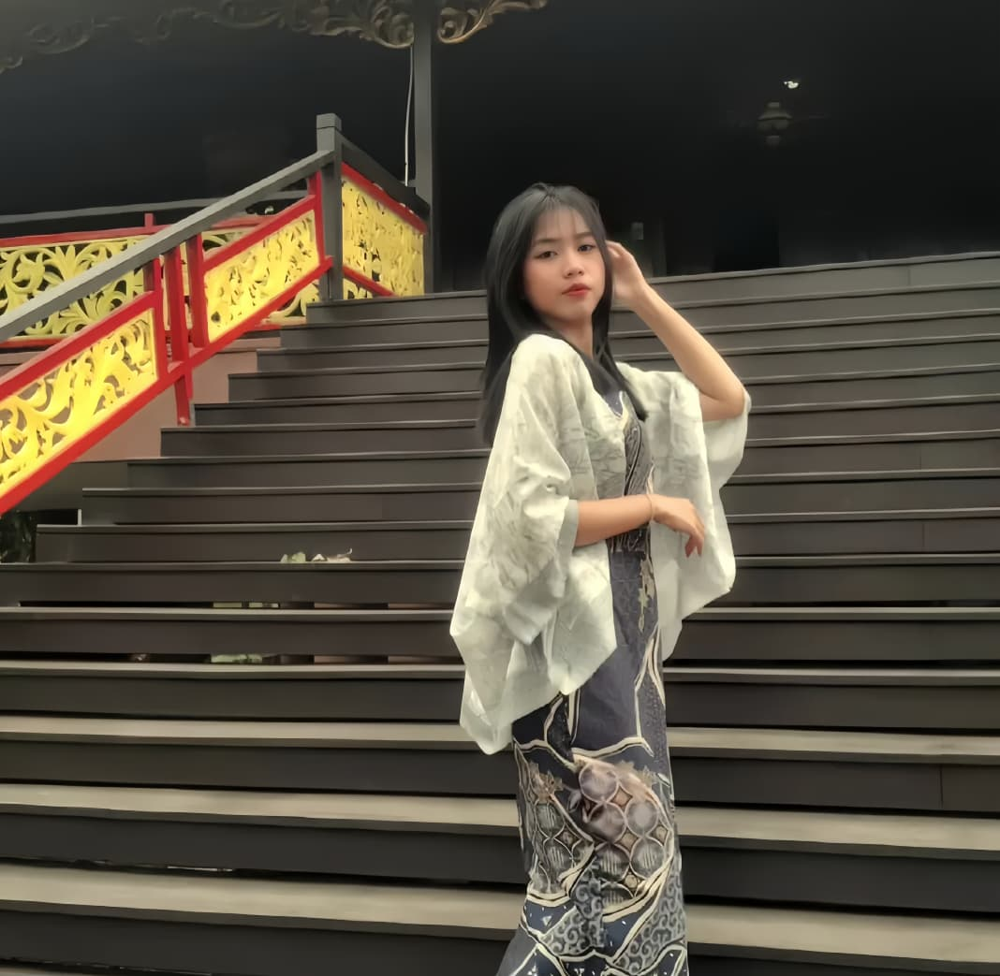
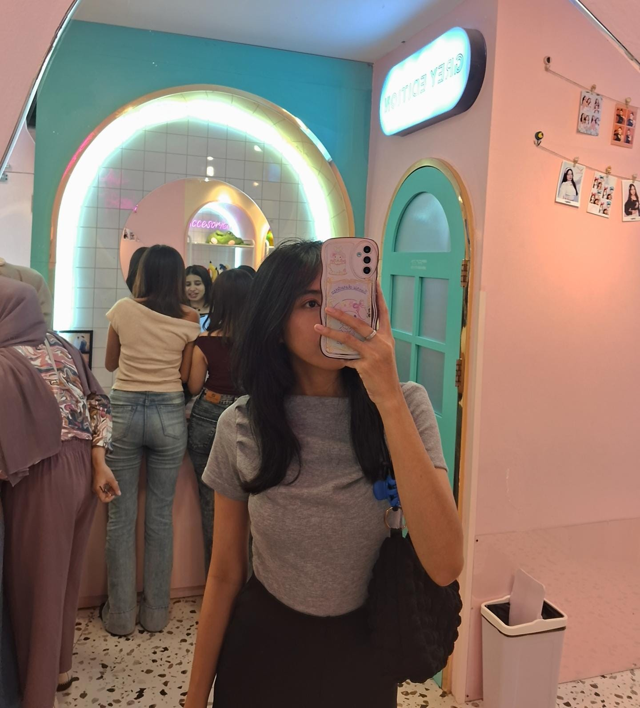
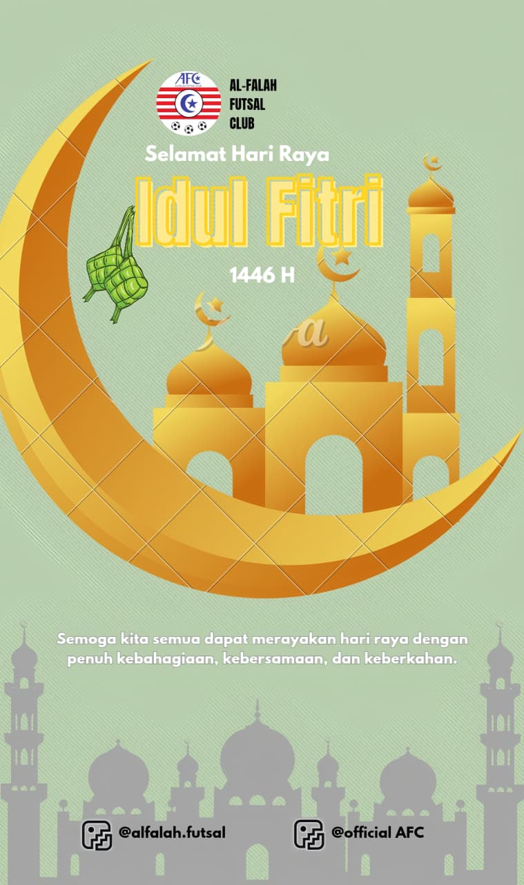
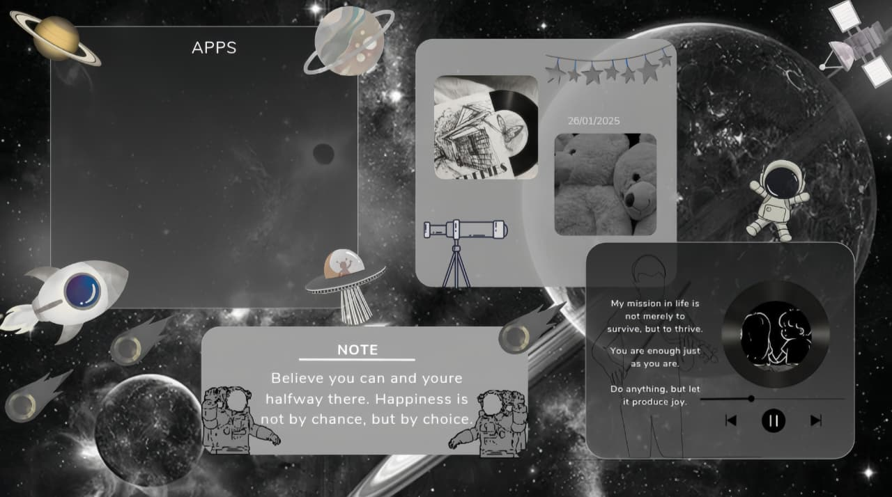
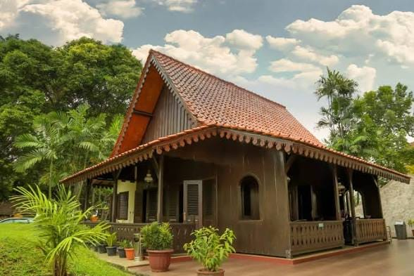
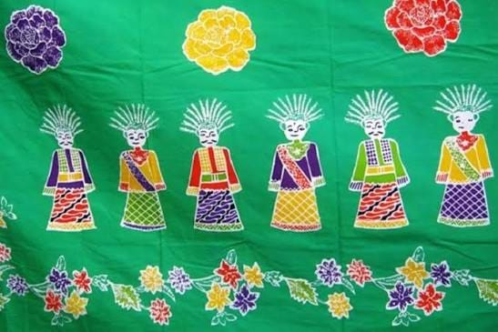
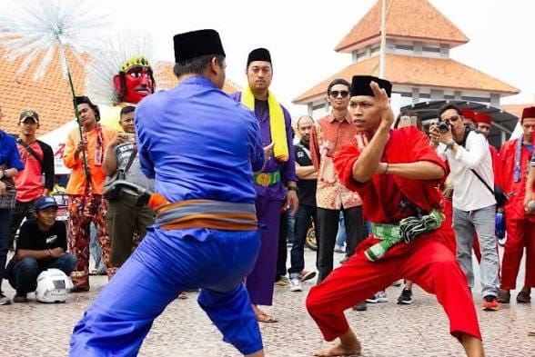
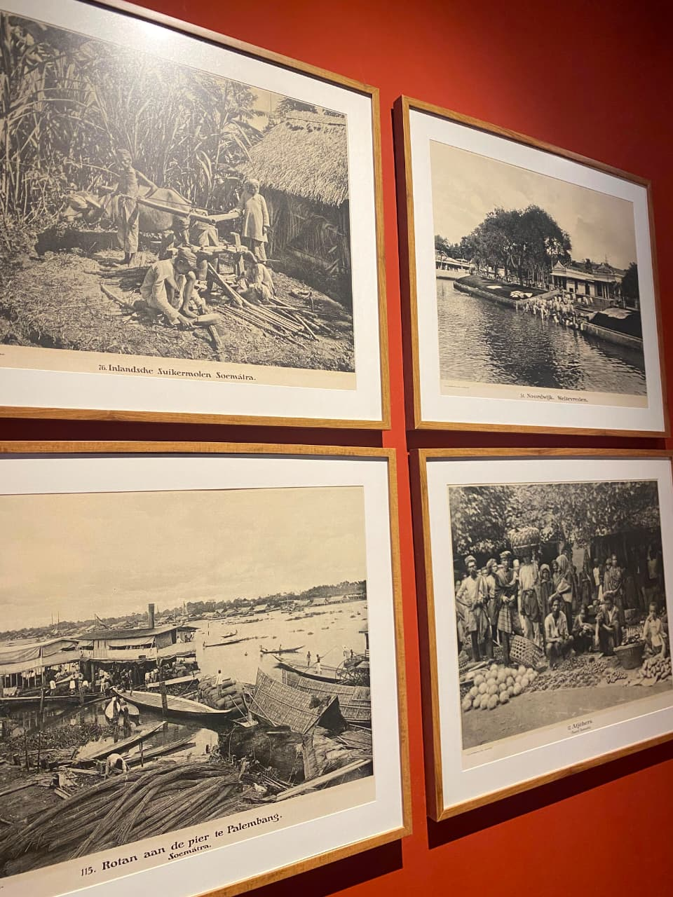

<!DOCTYPE html>
<html lang="id">
<head>
    <meta charset="UTF-8">
    <meta name="viewport" content="width=device-width, initial-scale=1.0">

    <title>Portofolio Indah Nur Cahyani</title>

    


    <!-- Menghubungkan file CSS -->
    <link rel="stylesheet" href="css/style.css">
</head>

<body>

    <!-- Seluruh isi website kamu di sini -->

    <script src="js/script.js"></script>
    <script src="js/betawi.js"></script>
</body>
</html>


    
<div id="introScreen" class="intro-screen">

  <!-- VIDEO BACKGROUND -->
  <video class="intro-video" autoplay muted loop playsinline>
    <source src="videos/intro-rain.mp4" type="video/mp4">
    Browser kamu tidak mendukung video.
  </video>

  <!-- LAPISAN GELAP AGAR TEKS TERBACA -->
  <div class="intro-video-overlay"></div>

  <nav class="intro-nav">
    <span>Darra's Portfolio</span>
    <div>Home　 About　 Portfolio　 Contact</div>
  </nav>

  <div class="intro-center">
    <p class="intro-eyebrow">✦ — WELCOME TO MY — ✦</p>
    <h1>The Creative<br><span>Journey✦</span></h1>
    <p>
      Discover my story, skills, and creative works.<br>
      
    </p>
    <button id="enterHomeButton" type="button">
      ✦ &nbsp;  Explore My Portfolio  &nbsp; →
    </button>
  </div>

  <div class="intro-footer">Scroll to discover more　 →</div>

  <div class="intro-curtain curtain-left"></div>
  <div class="intro-curtain curtain-right"></div>

</div>


     <!-- NAVIGASI -->
<header>
    <nav>
        <a href="#home" class="logo">Just Call Me Darra</a>

        <ul>
            <li><a href="#about">About Me</a></li>
            <li><a href="#pendidikan">Education</a></li>
            <li><a href="#skills">Skills</a></li>
            <li><a href="#hobi">Hobbies</a></li>
            <li><a href="#project">Project</a></li>
            <li><a href="#contact">Contact</a></li>
        </ul>

        <!-- TOMBOL TEMA -->
        <button id="theme-toggle" class="theme-toggle"
                type="button" aria-label="Ganti tema">
            🌙
        </button>


       
       
<!-- MUSIC PLAYER -->
<div class="music-player">
    <button
        type="button"
        id="musicToggle"
        class="music-toggle"
        aria-label="Buka pemutar musik"
        aria-expanded="false"
        aria-controls="musicDropdown">
        🎵
    </button>

    <div id="musicDropdown" class="music-dropdown" hidden>
        <h3>♫ My Little Playlist</h3>
        <p class="music-subtitle">A little music for your visit ♡</p>

        <div class="music-track-list">
            <button type="button" class="music-track"
                    data-src="music/lagu5.mp4">
                <span>🎧</span>
                <span>
                    <strong>Relaxing Time</strong>
                    <small>Chill &amp; Relax</small>
                </span>
            </button>

            <button type="button" class="music-track"
                    data-src="music/lagu2.mpeg">
                <span>🎶</span>
                <span>
                    <strong>My Favorite Song</strong>
                    <small>Favorite Playlist</small>
                </span>
            </button>

            <button type="button" class="music-track"
                    data-src="music/lagu4.mp4">
                <span>💜</span>
                <span>
                    <strong>Sweet Memories</strong>
                    <small>Soft &amp; Dreamy</small>
                </span>
            </button>
        </div>

        <div class="music-controls">
            <span id="musicStatus">Pilih lagu untuk memulai</span>
            <button type="button" id="musicPlayPause"
                    aria-label="Play atau pause musik">▶</button>
        </div>

        <audio id="portfolioAudio" preload="none"></audio>
    </div>
</div>


        <!-- MENU TITIK TIGA -->
        <div class="more-menu">
            <button type="button"
                    class="more-menu-button"
                    id="moreMenuButton"
                    aria-label="Buka menu tambahan"
                    aria-expanded="false"
                    aria-controls="moreMenuDropdown">
                ⋮
            </button>

            <div class="more-menu-dropdown" id="moreMenuDropdown" hidden>

               <button type="button" class="more-menu-item" id="themeMenuButton">
    👤 <span id="profileMenuName">Profil Pengguna</span>
</button>

<div id="visitorProfile">
    <p>👋 Halo, <strong id="visitorName">Pengunjung</strong>!</p>

    <label for="visitorNameInput">Nama kamu:</label>
    <input
        type="text"
        id="visitorNameInput"
        placeholder="Masukkan nama kamu"
        maxlength="40"
    >

    <button type="button" id="saveVisitorName">Simpan Nama</button>
</div>

                <a class="more-menu-item" href="new/cv.pdf" download>
                    📄 <span>Unduh CV</span>
                </a>

                <button type="button" class="more-menu-item" id="shareMenuButton">
                    🔗 <span>Bagikan Portofolio</span>
                </button>

                <div class="menu-divider"></div>

                <button type="button" class="more-menu-item" id="aboutMenuButton">
                    ✨ <span>Tentang Website</span>
                </button>
            </div>
        </div>
    </nav>

</header>


    <!-- KONTEN UTAMA -->
    <main>


<!-- HOME -->
<section id="home">
    <div class="home-content">
        <p class="home-label">HALO, My Name</p>

        <h1>Indah Nur Cahyani</h1>

        <h2>Passion for Creativity & Technology.</h2>
        <p class="home-description">
        <span id="typing-description"></span>
        <span class="typing-cursor">|</span>
       </p>

        <a href="#about" class="home-button">Discover My Story →</a>
    </div>

    <div class="home-image">
        
    </div>
</section>

        <!-- TENTANG SAYA -->
        <section id="about">
            <h2>About Me</h2>

            <p>
              Saya merupakan mahasiswi semester 5 Program Studi Teknik Informatika di Universitas Indraprasta PGRI yang memiliki ketertarikan pada desain visual, pengembangan website, dan teknologi digital. Saya senang mengeksplorasi ide kreatif serta menggabungkan unsur estetika dan teknologi untuk menghasilkan karya yang menarik, fungsional, dan mudah digunakan.  
            </p>

            <p>
             Saat ini, saya sedang mempelajari dasar-dasar pengembangan web menggunakan HTML, CSS, dan JavaScript untuk memahami proses membangun serta merancang tampilan website. Saya juga sedang mendalami UI/UX Design, khususnya dalam memahami kebutuhan pengguna, menyusun tata letak antarmuka, serta menciptakan pengalaman pengguna yang nyaman, intuitif, dan menarik secara visual. 
            </p>
             
            <p>
                Saya percaya bahwa proses belajar merupakan bagian penting dalam mengembangkan potensi diri. Oleh karena itu, saya terus mengasah keterampilan, mengeksplorasi ide-ide baru, dan terbuka terhadap berbagai pengalaman yang dapat menambah wawasan. Ke depannya, saya ingin terus berkembang dalam bidang desain dan pengembangan web serta menghasilkan karya digital yang kreatif, inovatif, dan memberikan manfaat bagi penggunanya.
            </p>

        </section>

       
<!-- PENDIDIKAN -->
<section id="pendidikan">
    <h2>Education</h2>

    <div class="education-card">
        <h3>Universitas Indraprasta PGRI</h3>
        <p>Universitas Indraprasta PGRI (UNINDRA), Kampus B, Jl. Raya Tengah No.80, RT.1/RW.3, Gedong, Kec. Ps. Rebo, Kota Jakarta Timur, Daerah Khusus Ibukota Jakarta 13760</p>
        <p>2024 sampai sekarang</p>
    </div>

    <div class="education-card">
        <h3>SMAN 62 Jakarta</h3>
        <p>SMA Negeri 62 Jakarta, Jl. Raya Jakarta-Bogor, RT.13/RW.11, Kramat Jati, Kec. Kramat jati, Kota Jakarta Timur, Daerah Khusus Ibukota Jakarta 13540</p>
        <p>2021-2024</p>
    </div>

    <!-- Pendidikan SMP -->
<div class="education-card">
    <h3>SMPN 281 Jakarta</h3>
    <p>SMPN 281 Jakarta, 9, Jl. Kerja Bakti No.RT.7 7, RT.7/RW.9, Kramat Jati, Kec. Kramat jati, Kota Jakarta Timur, Daerah Khusus Ibukota Jakarta 13570</p>
    <p>2018-2021</p>
</div>

<!-- Pendidikan SD -->
<div class="education-card">
    <h3>SDN Kramat Jati 02 Pagi</h3>
    <p>SDN Kramat Jati 02, Rt. 007 Rw. 009, Jl. Batu Tumbuh, RT.4/RW.6, Kramat Jati, Jakarta Timur, Kota Jakarta Timur, Daerah Khusus Ibukota Jakarta 13510</p>
    <p>2012-2018</p>
</div>
</section>

        <!-- SKILLS -->
<section id="skills">
    <h2>My Skills</h2>
    <p class="skills-intro">
        Beberapa kemampuan yang sedang saya kembangkan
        untuk mendukung kreativitas dan pembelajaran di bidang teknologi.
    </p>

    <div class="skills-container">
        <div class="skill-card">
            <span class="skill-icon">🎨</span>
            <h3>Desain Visual</h3>
            <p>Mengembangkan konsep visual melalui perpaduan warna, tipografi, komposisi, dan elemen grafis untuk menghasilkan desain yang menarik, harmonis, serta sesuai dengan tujuan komunikasi. Tertarik mengeksplorasi berbagai gaya desain untuk kebutuhan branding, promosi, dan konten digital.
          
                <div class="project-tags">
                    <span>Graphic Design</span>
                    <span>Typography</span>
                    <span>Visual Composition</span>
                </div>
            </div>

        <div class="skill-card">
            <span class="skill-icon">📸</span>
            <h3>Editing Foto & Video</h3>
            <p>Mengolah foto dan video menjadi konten visual yang lebih menarik melalui penyesuaian warna, pemilihan komposisi, pemotongan klip, transisi, serta penyelarasan musik. Berfokus pada penyampaian pesan yang kreatif dan tampilan visual yang sesuai dengan kebutuhan konten.

                <div class="project-tags">
                    <span>Photo Editing</span>
                    <span>Video Editing</span>
                    <span>Content Creation</span>
                </div>
            </div>

        <div class="skill-card">
            <span class="skill-icon">✦</span>
            <h3>UI/UX Design</h3>
            <p>Sedang mempelajari prinsip UI/UX Design untuk memahami cara merancang antarmuka digital yang menarik, intuitif, dan mudah digunakan. Mulai mengeksplorasi tata letak, konsistensi elemen visual, navigasi, serta pengalaman pengguna agar desain tidak hanya terlihat baik, tetapi juga nyaman digunakan.

                <div class="project-tags">
                    <span>UI Design</span>
                    <span>UX Fundamentals</span>
                    <span>Layout Design</span>
                </div>
            </div>

        <div class="skill-card">
            <span class="skill-icon">💻</span>
            <h3>Web Development</h3>
            <p>Sedang mempelajari dasar-dasar pengembangan website menggunakan HTML, CSS, dan JavaScript. Berlatih menyusun struktur halaman, mengatur tampilan dan responsivitas, serta memahami interaksi sederhana agar dapat membangun website yang informatif, menarik, dan dapat diakses melalui berbagai perangkat.

                <div class="project-tags">
                    <span>HTML</span>
                    <span>CSS</span>
                    <span>JavaScript</span>
                </div>
            </div>
    </div>
</section>

        <!-- HOBI -->
         
<section id="hobi">
    <div class="hobi-wrapper">
        <div class="hobi-content">
            <span class="hobi-label">MY CREATIVE SIDE</span>
            <h2>My Hobbies</h2>

            <p>
                Saya memiliki beberapa hobi yang saya sukai, di antaranya bernyanyi, bermain gitar, mengedit foto dan video, serta bermain game Mobile Legends. Saya suka bernyanyi dan bermain gitar karena musik bisa membuat saya merasa lebih rileks sekaligus menjadi cara untuk mengekspresikan diri. Selain itu, saya juga senang mengedit foto dan video menggunakan CapCut. Saya suka mencoba berbagai efek, mengatur warna, dan menyesuaikan musik agar hasil editan terlihat menarik dan estetik. Di waktu luang, saya juga suka sekali bermain Mobile Legends karena permainannya seru dan menantang. Saya senang menyusun strategi dan bermain bersama teman-teman. Bagi saya, hobi bukan hanya untuk mengisi waktu luang, tetapi juga menjadi cara untuk bersenang-senang, mengembangkan kreativitas, dan melakukan hal-hal yang saya sukai.
            </p>
        </div>

        <div class="hobi-visual" aria-hidden="true">
            <span class="music-note note-one">♫</span>
            <span class="music-note note-two">♪</span>
            <span class="music-note note-three">♬</span>

            <div class="music-disc">
                <div class="disc-center">♫</div>
            </div>

            <div class="music-bars">
                <span></span>
                <span></span>
                <span></span>
                <span></span>
                <span></span>
                <span></span>
                <span></span>
            </div>
        </div>
    </div>
</section>


<!-- PROJECT -->
<section id="project">
    <h2>My Project</h2>
    <p class="project-intro">
        A collection of my projects and creative works
    </p>

    <div class="project-container">

        <!-- KOLOM KIRI -->
        <div class="project-column">

            <!-- PROJECT 01: WEBSITE PORTOFOLIO -->
            <div class="project-card">
                <span class="project-number">01</span>
                <div class="project-icon">💻</div>
                <p class="project-category">WEB DEVELOPMENT</p>
                <h3>Website Portofolio Pribadi</h3>
                <p>
                    Membuat website menggunakan HTML, CSS, dan JavaScript
                    untuk memperkenalkan diri, pendidikan, keterampilan,
                    dan hasil karya.
                </p>
                <div class="project-tags">
                    <span>HTML</span>
                    <span>CSS</span>
                    <span>JavaScript</span>
                </div>
            </div>

            <!-- PROJECT 03: USAHA HAMSTER -->
            <div class="project-card">
                <span class="project-number">03</span>
                <div class="project-icon">🐹</div>
                <p class="project-category">ENTREPRENEURSHIP</p>
                <h3>Perencanaan Usaha Penjualan Hamster</h3>
                <p>
                    Mengembangkan usaha penjualan hamster dengan memanfaatkan
                    media sosial sebagai sarana promosi dan pemasaran, seperti
                    TikTok, Instagram, serta grup komunitas hamster di Facebook.
                    Proposal ini berisi analisis SWOT, strategi, target, dan
                    Business Model Canvas.
                </p>

                <a href="./dokumen/hamster.pdf"
                   target="_blank"
                   rel="noopener noreferrer"
                   class="proposal-cover">
                    <div class="cover-content">
                        <span class="cover-icon">🐹</span>
                        <p class="cover-label">PROPOSAL USAHA</p>
                        <h4>Penjualan Hamster</h4>
                        <p class="cover-description">
                            Analisis SWOT, Strategi, Target &amp; Model Bisnis
                        </p>
                        <span class="cover-link">
                            📄 Lihat Proposal Lengkap ↗
                        </span>
                    </div>
                </a>
            </div>

            <!-- PROJECT 04: ARGASTA MAHESWARA -->
            <div class="project-card wattpad-project">
                <span class="project-number">04</span>
                <div class="project-icon">📖</div>
                <span class="project-label">CREATIVE WRITING</span>
                <h3>Argasta Maheswara</h3>
                <p>
                    Sebuah karya fiksi bergenre romance yang saya tulis
                    dan publikasikan di Wattpad, dan saat ini masih dalam
                    proses pengembangan. Melalui cerita ini, saya
                    mengeksplorasi kreativitas dalam merangkai alur,
                    membangun karakter, serta menyampaikan emosi melalui
                    narasi dan dialog. Proyek ini juga menjadi ruang bagi
                    saya untuk mengembangkan kemampuan menulis, menuangkan
                    ide, dan menciptakan cerita yang dapat membangun
                    keterikatan emosional dengan pembaca.
                </p>
                <div class="project-tags">
                    <span>Romance</span>
                    <span>Storytelling</span>
                    <span>Creative Writing</span>
                </div>
                <a href="https://www.wattpad.com/story/386971243-argasta-maheswara"
                   target="_blank"
                   rel="noopener noreferrer"
                   class="wattpad-link">
                    📖 Baca di Wattpad ↗
                </a>
            </div>

            <!-- PROJECT 05: VIDEO EDITING -->
            <div class="project-card video-project-card">
                <span class="project-number">05</span>
                <div class="project-icon">🎮</div>
                <p class="project-category">CREATIVE VIDEO</p>
                <h3>Video Editing</h3>
                <div class="video-preview">
                    <video controls preload="metadata">
                        <source src="videos/video-edit.mp4" type="video/mp4">
                        Browser kamu tidak mendukung pemutaran video.
                    </video>
                </div>
                <p>
                    Hasil karya editing video saya yang menggabungkan
                    musik, transisi, dan visual kreatif untuk menghasilkan
                    video yang menarik dan estetik.
                </p>
                <div class="project-tags">
                    <span>CapCut</span>
                    <span>Video Editing</span>
                </div>
            </div>

            <!-- KARTU FOTO PRIBADI: KOLOM KIRI -->
            <div class="project-card photo-project-card">
                <button
                    type="button"
                    class="photo-switcher"
                    id="photoSwitcher"
                    aria-label="Ganti foto"
                    title="Klik untuk melihat foto berikutnya"
                >
                    
                </button>
            </div>

        </div>
        <!-- AKHIR KOLOM KIRI -->


        <!-- KOLOM KANAN -->
        <div class="project-column">

            <!-- PROJECT 02: LAGU CIPTAAN -->
            <div class="project-card song-project">
                <span class="project-number">02</span>
                <div class="project-icon">🎵</div>
                <p class="project-category">MUSIC CREATION</p>
                <h3>Lagu Ciptaan Saya</h3>

                <p class="project-description">
                    Sebuah karya musik saya ciptakan yang berjudul
                    "Masih Seperti Dulu" melalui perasaan dan ungkapan
                    yang tidak bisa saya kendalikan maka terciptalah lagu ini.
                </p>

                <div class="song-video">
                    <video controls preload="metadata">
                        <source src="videos/ciptaan.mp4" type="video/mp4">
                        Browser kamu tidak mendukung pemutaran video.
                    </video>
                </div>

                <div class="song-lyrics">
                    <h4>♪ Lirik Lagu</h4>
                    <div class="lyrics-scroll">
                        <p>
                            [Verse 1]<br>
                            Kini malam mulai kabut<br>
                            Terasa dingin hatiku<br>
                            Ini malam semakin larut<br>
                            Tanpa engkau disisi ku<br><br>

                            [Pre-Chorus]<br>
                            Tulis bagian pre-chorus di sini<br>
                            Katakanlah cinta kepada diriku<br>
                            Pernah merindu setelah sekian lama<br>
                            Dengan rasa di hati diriku selalu<br>
                            Menanti kehadiranmu<br><br>

                            [Chorus]<br>
                            Aku sangat mencintai dirimu<br>
                            Bahkan aku tak bisa melupakanmu<br>
                            Kau selalu kunantikan<br>
                            Wajahmu yang selalu terbayang<br><br>

                            Sebenarnya hatiku<br>
                            Takkan bisa bila tak mungkin bersamamu<br>
                            Yang kunantikan hanya dirimu selalu<br>
                            Takkan tergantikan dengan rasa yang baru<br><br>

                            [Outro]<br>
                            Sampai kapankah<br>
                            Aku berharap cinta tulusmu, kasih..<br>
                            Masihkah ada ruang di dalam hatimu<br>
                            Untuk kembali bersamaku<br><br>
                        </p>
                    </div>
                </div>

                <div class="song-meaning">
                    <span class="song-label">
                        THE STORY BEHIND THE SONG
                    </span>
                    <h4>Makna di Balik Lagu</h4>

                    <p>
                        Lagu ini saya ciptakan sebagai bentuk ungkapan
                        perasaan dan emosional yang ada di dalam diri saya.
                        Melalui lagu ini, saya mencoba mengekspresikan
                        berbagai emosi yang terkadang sulit untuk diungkapkan
                        secara langsung melalui kata-kata. Setiap lirik yang
                        saya tulis menjadi cara bagi saya untuk menyampaikan
                        apa yang saya rasakan, mulai dari rasa cinta,
                        kerinduan, harapan, hingga perasaan ingin kembali
                        bersama seseorang yang berarti.
                    </p>

                    <p>
                        Lagu ini juga menjadi wadah bagi saya untuk menuangkan
                        perasaan yang terpendam dan menjadikannya sebuah karya
                        musik. Saya ingin menyampaikan bahwa terkadang musik
                        bisa menjadi cara untuk mengungkapkan isi hati ketika
                        kata-kata saja terasa tidak cukup. Melalui melodi dan
                        liriknya, saya berusaha menggambarkan emosi yang saya
                        rasakan secara jujur, agar perasaan tersebut bisa
                        tersampaikan dengan lebih dalam dan bermakna kepada
                        siapa pun yang mendengarkannya.
                    </p>
                </div>
            </div>


            


<!-- PROJECT 06: POSTER IDUL FITRI -->
<div class="project-card poster-project-card">
    <span class="project-number">06</span>
    <div class="project-icon">🌙</div>

    <p class="project-category">GRAPHIC DESIGN</p>
    <h3>Desain Poster Idul Fitri</h3>

    <p>
        Desain poster ucapan Selamat Hari Raya Idul Fitri
        1446 H yang saya buat pada tahun 2025 berdasarkan
        permintaan seorang teman.
    </p>

    <button
        type="button"
        class="show-artwork-btn"
        onclick="toggleArtwork('posterArtwork', this)">
        👁 Lihat Poster
    </button>

    <div id="posterArtwork" class="artwork-preview" hidden>
        
    </div>

    <div class="project-tags">
        <span>Graphic Design</span>
        <span>Poster Design</span>
        <span>2025</span>
    </div>
</div>


<!-- PROJECT 07: DESAIN BACKGROUND LAPTOP -->
<div class="project-card laptop-project-card">
    <span class="project-number">07</span>
    <div class="project-icon">🪐</div>

    <p class="project-category">DIGITAL ART</p>
    <h3>Desain Background Laptop</h3>

    <p>
        Desain background laptop bertema luar angkasa
        yang saya buat pada tahun 2025 untuk mengisi
        waktu luang, dengan perpaduan ilustrasi planet,
        astronaut, dan nuansa monokrom.
    </p>

    <button
        type="button"
        class="show-artwork-btn"
        onclick="toggleArtwork('laptopArtwork', this)">
        👁 Lihat Desain
    </button>

    <div id="laptopArtwork" class="artwork-preview" hidden>
        
    </div>

    <div class="project-tags">
        <span>Digital Art</span>
        <span>Photo Editing</span>
        <span>2025</span>
    </div>
</div>

</section>


<!-- DISCOVER BETAWI CULTURE -->
<section id="betawi-culture">
    <div class="betawi-heading">
        <span class="betawi-label">CULTURE • HISTORY • HERITAGE</span>
        <h2>Discover Betawi Culture</h2>
        <p>
            Yuk, mengenal lebih dekat kekayaan budaya Betawi,
            mulai dari rumah adat, batik, kuliner, hingga tradisi
            yang masih dilestarikan sampai sekarang.
        </p>
    </div>

    <div class="betawi-grid">

        <!-- 01 RUMAH ADAT -->
        <article class="betawi-card">
            <div class="betawi-image">
                
                <span class="betawi-number">01</span>
            </div>
            <div class="betawi-card-content">
                <span class="betawi-category">ARSITEKTUR</span>
                <h3>Rumah Adat Betawi</h3>
                <p>Rumah Kebaya merupakan rumah adat khas Betawi yang dikenal dengan bentuk atap menyerupai lipatan kebaya. Arsitekturnya yang unik dan terasnya yang luas mencerminkan keramahan serta kebersamaan masyarakat Betawi.</p>
                <button class="betawi-detail-button"
                        type="button"
                        data-culture="rumah">
                    Jelajahi Budaya <span>↗</span>
                </button>
            </div>
        </article>

        <!-- 02 BATIK BETAWI -->
        <article class="betawi-card">
            <div class="betawi-image">
                
                <span class="betawi-number">02</span>
            </div>
            <div class="betawi-card-content">
                <span class="betawi-category">SENI & BUSANA</span>
                <h3>Batik & Pakaian Betawi</h3>
                <p>Batik Betawi memiliki motif khas yang terinspirasi dari budaya dan kehidupan masyarakat Jakarta, seperti Ondel-ondel dan ikon kota. Selain batik, pakaian tradisional Betawi juga memiliki ciri khas tersendiri yang mencerminkan identitas, keindahan, dan kekayaan budaya masyarakatnya.</p>
                <button class="betawi-detail-button"
                        type="button"
                        data-culture="batik">
                    Jelajahi Budaya <span>↗</span>
                </button>
            </div>
        </article>

        <!-- 03 MAKANAN KHAS -->
        <article class="betawi-card">
            <div class="betawi-image">
                
                <span class="betawi-number">03</span>
            </div>
            <div class="betawi-card-content">
                <span class="betawi-category">KULINER</span>
                <h3>Makanan Khas Betawi</h3>
                <p>Kuliner Betawi memiliki cita rasa yang khas dengan perpaduan bumbu dan rempah yang menggugah selera. Kerak telor menjadi salah satu hidangan ikonik Jakarta, bersama kuliner tradisional lainnya seperti soto Betawi, asinan Betawi, dan nasi uduk yang turut memperkaya warisan budaya Betawi.</p>
                <button class="betawi-detail-button"
                        type="button"
                        data-culture="kuliner">
                    Jelajahi Budaya <span>↗</span>
                </button>
            </div>
        </article>

        <!-- 04 SILAT & PALANG PINTU -->
        <article class="betawi-card">
            <div class="betawi-image">
                
                <span class="betawi-number">04</span>
            </div>
            <div class="betawi-card-content">
                <span class="betawi-category">TRADISI</span>
                <h3>Silat & Palang Pintu</h3>
                <p>Silat Betawi merupakan seni bela diri tradisional yang mencerminkan keberanian, ketangkasan, dan kedisiplinan. Sementara itu, Palang Pintu adalah tradisi dalam pernikahan Betawi yang memadukan pertunjukan silat dan berbalas pantun sebagai simbol penghormatan, keterampilan, serta keakraban antara kedua keluarga.</p>
                <button class="betawi-detail-button"
                        type="button"
                        data-culture="palang">
                    Jelajahi Budaya <span>↗</span>
                </button>
            </div>
        </article>

    </div>

</section>

<!-- POP-UP INFORMASI BUDAYA -->
<div class="betawi-modal" id="betawiModal"
     role="dialog" aria-modal="true"
     aria-labelledby="betawiModalTitle" hidden>
    <div class="betawi-modal-content">
        <button type="button" class="betawi-modal-close"
                id="betawiModalClose" aria-label="Tutup informasi">
            &times;
        </button>
        <span class="betawi-label">DISCOVER BETAWI</span>
        <h3 id="betawiModalTitle"></h3>
        <p id="betawiModalText"></p>
        <a id="betawiModalLink" href="#"
           target="_blank" rel="noopener noreferrer">
            Baca informasi lebih lanjut ↗
        </a>
    </div>
</div>
<!-- AKHIR DISCOVER BETAWI CULTURE -->


<!-- MOTIVATION SECTION -->
<section id="motivation">
    <div class="motivation-container">

        <div class="motivation-image">
            
        </div>

        <div class="motivation-content">
            <p class="motivation-label">
                A LITTLE REMINDER FOR MYSELF
            </p>

            <h2>Pelan-pelan, Aku Juga Sedang Bertumbuh.</h2>

            <p>
                Tidak semua hal harus selesai hari ini.
                Ada kalanya aku perlu berhenti sebentar,
                menarik napas, dan mengingat bahwa setiap
                orang punya waktunya masing-masing. Aku
                mungkin belum sehebat orang lain, belum
                memiliki semua hal yang aku impikan, dan
                terkadang masih merasa bingung dengan
                jalan yang sedang aku pilih. Namun, itu
                bukan berarti aku gagal.
            </p>

            <p>
                Aku sedang belajar, mencoba, memperbaiki
                kesalahan, dan mengumpulkan pengalaman
                sedikit demi sedikit. Setiap proses yang
                terasa sulit tetap mengajarkanku sesuatu.
                Aku ingin terus berkembang, berani mencoba
                hal baru, dan tidak menyerah hanya karena
                perjalanan ini terasa lambat.
            </p>

            <p>
                Suatu hari nanti, aku ingin melihat kembali
                diriku yang sekarang dengan bangga, karena
                ternyata aku mampu melewati banyak hal
                yang dulu terasa mustahil. Aku ingin terus
                melangkah, meskipun perlahan, sampai bisa
                mencapai hal-hal yang selama ini aku impikan.
            </p>

            <blockquote>
                "Aku tidak harus menjadi sempurna untuk
                bisa merasa bangga pada diriku sendiri."
            </blockquote>
        </div>

    </div>
</section>
<!-- AKHIR MOTIVATION SECTION -->

<section id="contact">
    <h2>Tentang Saya</h2>
    <p>
        Terima kasih sudah mengunjungi portofolio saya.
        Silakan hubungi saya melalui kontak berikut
        atau kirim pesan langsung melalui formulir di bawah.
    </p>

    <div class="contact-list">

        <a href="mailto:indahnc1908@gmail.com" class="contact-item">
            <span>✉</span>
            <div>
                <h3>Gmail</h3>
                <p>indahnc1908@gmail.com</p>
            </div>
        </a>

        <a href="https://www.instagram.com/ndahhw00/"
           target="_blank" rel="noopener noreferrer"
           class="contact-item">
            <span>◎</span>
            <div>
                <h3>Instagram</h3>
                <p>@ndahhw00</p>
            </div>
        </a>


        <a href="https://www.tiktok.com/@darra0w0?_r=1&_t=ZS-9AXf4dTsG4T"
           target="_blank" rel="noopener noreferrer"
           class="contact-item">
            <span>ᕷ️</span>
            <div>
                <h3>Tiktok</h3>
                <p>darra0w0</p>
            </div>
        </a>


        <a href="http://t.me/Knjngrtdarra"
           target="_blank" rel="noopener noreferrer"
           class="contact-item">
            <span>⌯⌲</span>
            <div>
                <h3>Telegram</h3>
                <p>Knjngrtdarra</p>
            </div>
        </a>


        <a href="https://wa.me/62895327413526"
           target="_blank" rel="noopener noreferrer"
           class="contact-item">
            <span>☏</span>
            <div>
                <h3>WhatsApp</h3>
                <p>0895327413526</p>
            </div>
        </a>

        <a href="https://github.com/Darraw0"
           target="_blank" rel="noopener noreferrer"
           class="contact-item">
            <span>🔗‍️</span>
            <div>
                <h3>Github</h3>
                <p>github.com/Darraw0</p>
            </div>
        </a>


    </div>

    <!-- FORM PESAN -->
    <div class="contact-form">
        <h3>Kirim Pesan</h3>
        
        <form action="https://formsubmit.co/indahnc1908@gmail.com" method="POST">


            <input type="text"
                   name="name"
                   placeholder="Nama lengkap"
                   required>

            <input type="email"
                   name="email"
                   placeholder="Alamat email"
                   required>

            <input type="text"
                   name="subject"
                   placeholder="Subjek pesan"
                   required>

            <textarea name="message"
                      placeholder="Tulis pesan kamu di sini..."
                      rows="5"
                      required></textarea>

            <input type="hidden" name="_captcha" value="false">

            <button type="submit">Kirim Pesan</button>
        </form>
    </div>
</section>
